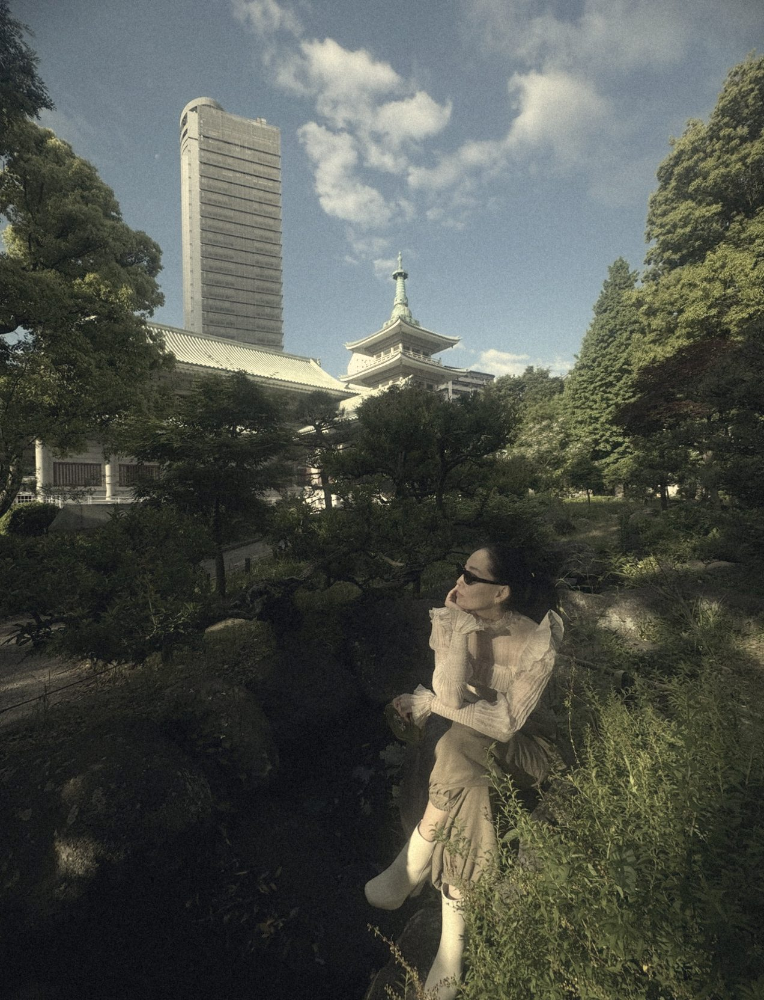

Перетащите дом за середину. Поверните за круглую ручку перед фасадом.
N · E · S · W
эстетика · вкус · уют — по сторонам света
Частный дом в вашем городе: ориентация на участке, расчёт по фэн-шуй и сад, который подходит вашему климату — от средней полосы до вечной мерзлоты.

Мы начинаем с участка и стороны света, рассчитываем дом по фэн-шуй, раскладываем комнаты и мебель, проектируем дом — и продолжаем его садом по солнцу, тени и почве.
Строгое соблюдение технологий на каждом этапе и продуманная эргономика: удобные проходы, высоты и расстояния — всё под рукой.
Отступы по нормам, золотое сечение в плане, фасаде и саду. Красота, которую можно посчитать.
Дом развёрнут по сторонам света, а комнаты стоят в согласии с летящими звёздами.
Рельеф, вид и солнце работают вместе с планом: сад продолжает дом.
Дом и сад под вашу семью: Гуа каждого, ваши привычки и любимые места для отдыха.
Солнце в кухне зимой, тёплые полы, тишина в спальнях, место для утреннего кофе.
Вход, комнаты и сад пропускают хорошую энергию и задерживают её там, где живут.
начните с участка
Поставить дом на картуПоставьте дом на карту и поверните фасадом. Сайт учтёт магнитное склонение вашего места, построит схему летящих звёзд по форме дома и подберёт вход.
Перетащите дом за середину. Поверните за круглую ручку перед фасадом.
Выберите помещения — сайт разложит их по секторам: где проводят время — по водной звезде, спальни — по горной и Гуа. Меняйте комнаты, расставляйте мебель и утверждайте вариант — по нему будет проектироваться дом.
Кухня-гостиная и кабинет — по водной звезде: там проводят время, но не спят. Спальни — по горной звезде и Гуа тех, кто в них спит. Плита — по горной звезде. Санузел, котельная, кладовка — в секторы с неблагоприятными звёздами. Прихожая — у входной двери, в центре — холл. Все санузлы — в одной мокрой точке: рядом друг с другом, на втором этаже — над санузлами первого; котельная — рядом с ними.
Когда комнаты и мебель вас устраивают, утвердите вариант. Утверждённая планировка переходит во вкладку «Проектирование дома».
Утверждённая планировка дорабатывается по строительным нормам: материал стен и утепление по СП 50, фундамент, перекрытия и стропила, проверка помещений по СП 55. На выходе — эскизный проект на листах А4 в PDF.
Материалы для дома по утверждённому эскизному проекту: фундамент, короб, кровля, окна, двери, полы и водосток. Цены — ориентир для Якутска; поменяйте их на цены своего поставщика.
Поставьте дом и постройки на участок, выберите день и время — и посмотрите, как солнце обходит дом и куда падают тени. Затем подберите растения по свету: каждому месту — своё.
Нажмите — композиция встанет на свою сторону участка: солнечные — на юг, теневые — на север. Потом её можно передвинуть. Нажмите на клумбу на плане — откроется картинка растений с названиями.
Сайт сам найдёт места по солнцу и тени и подберёт растения под свет, почву и климат.
Выберите, как хотите проводить время, — сайт найдёт место по солнцу в нужные часы.
Выберите растение и нажмите на план, чтобы посадить. Сайт проверит свет на этом месте за выбранный день и отступы от границы и дома.
Золотое сечение (≈ 1 : 1,618) и числа Фибоначчи (1, 2, 3, 5, 8, 13…) — подсказки для живой, не «циркульной» композиции. Точность не обязательна: важны баланс и естественность.